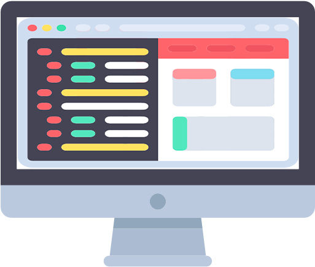

Tipos de Projetos
Animações CSS
Aqui você encontrará alguns exemplos de Animações realizadas utilizando CSS.
Design de sites

Nessa seção se encontra alguns templates de sites de áreas diferentes para demonstrar a estruturação utilizando tags semânticas e variedades de estilização utilizando o CSS.
Aplicações Web
Será apresentado algumas aplicações desenvolvidas utilizando Jquery e Javascript Vanilla. Como uma calculadora, jogo de dama, jogo da memória e muito mais.